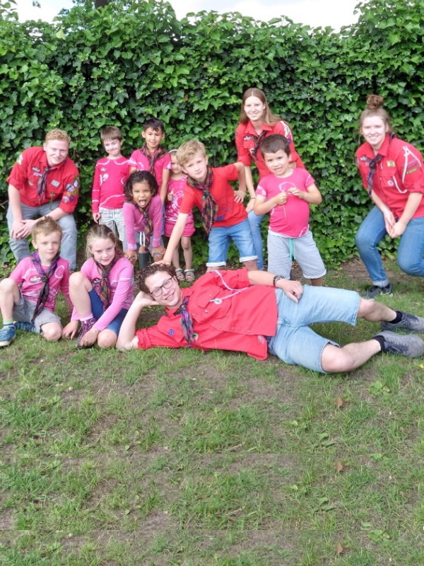
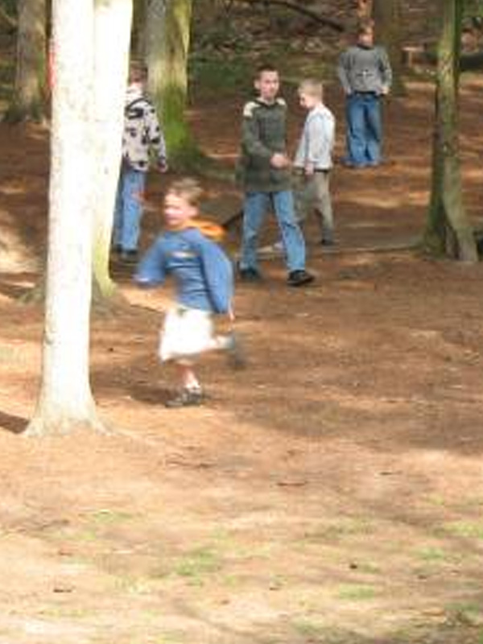
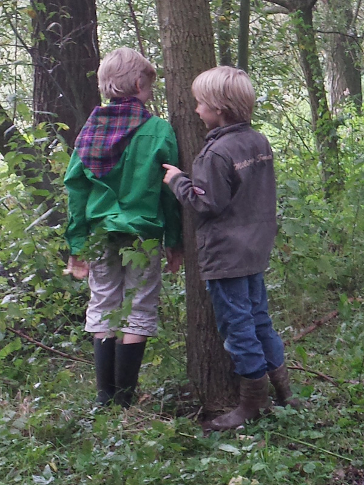
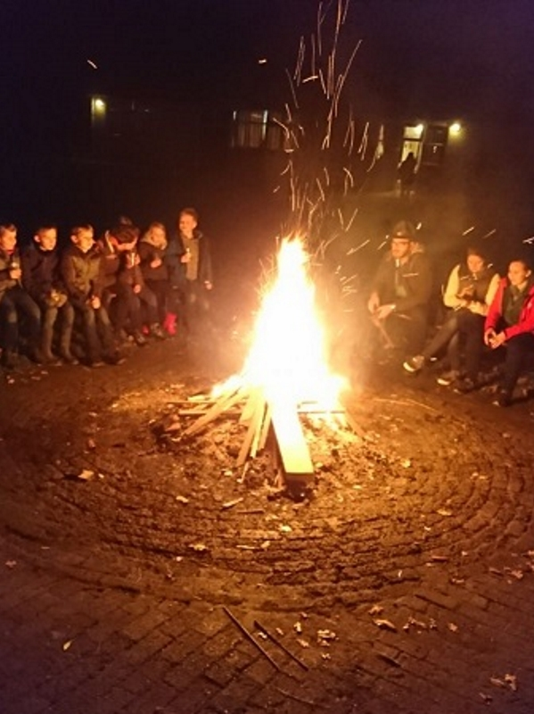
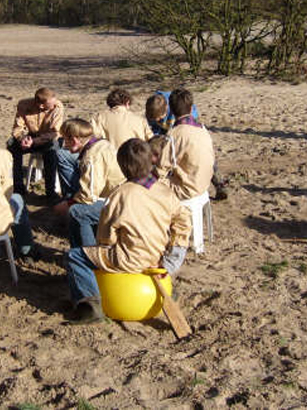
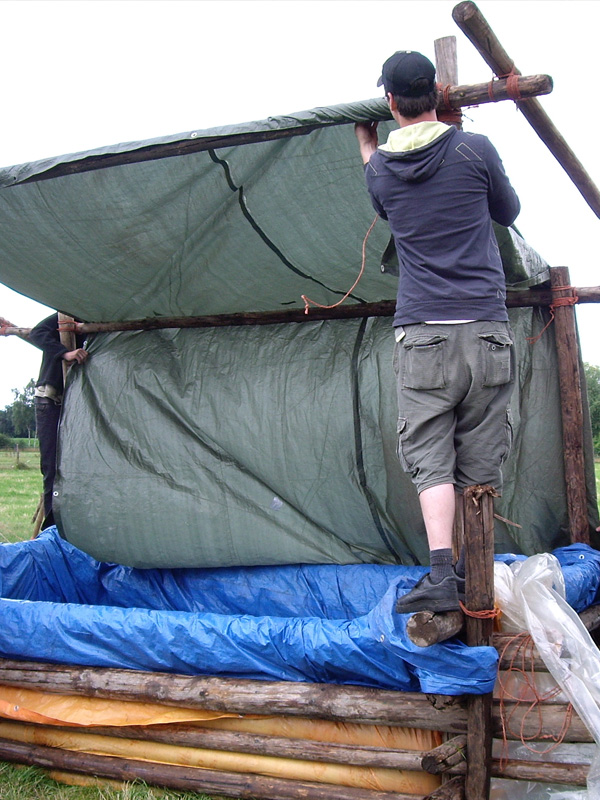
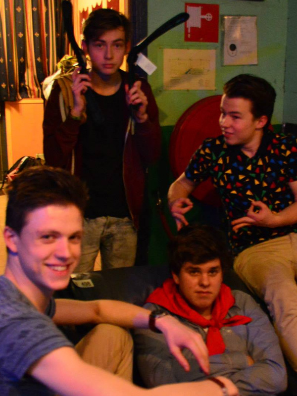

Van de eerste avonturen bij de Bevers tot zelf activiteiten organiseren bij de Explorers:
bij Scouting Veghel groeit het avontuur met je mee. Bekijk hieronder de leeftijden en
opkomsttijden.

Bevers
De jongste leden van Scouting Veghel. De groep om kennis te maken met het scoutingspel
op een afwisselende manier. De bosspelletjes worden afgewisseld met de mooiste
knutselwerkjes! De bevers mogen soms zelfs een weekendje slapen op de blokhut.
5-7 jr., za. 9:00 -
10:45
Kennismaken met deze groep

Welpen Klavertje 4
De welpen groep waar zowel jongens als meisjes zich helemaal kunnen uitleven tijdens
het programma. Luciferbanen, bruggen bouwen van papier, een 8 meter lang schilderij?
Waarom niet, dat doen we toch even als we uit het bos komen? Appeltje, eitje.
7-11 jr., za. 11:15
- 13:15
Kennismaken met deze groep

Welpen Sionie Horde
De welpen van deze stoere jongensgroep zijn onbevreesd en veelzijdig! Geen bos is
onbegaanbaar, geen spel is te moeilijk en ze laten geen uitdaging liggen! Ze spelen
samen met anderen in de jungle, houden vol en zorgen goed voor de natuur.
7-11 jr., za. 9:00
- 11:00
Kennismaken met deze groep

Welpen Nishaani Horde
Vrijdag avond gaan zowel meisjes als jongens de uitdaging van de welpen aan. Zullen ze
het donker in gaan of in het veilige licht van de blokhut blijven.
7-11 jr., vr. 18:30
- 20:30
Kennismaken met deze groep

Scouts de Dwaalsterren
Een scout trekt er samen met anderen op uit om de wijde wereld te ontdekken en op
iedere plek een goede grap te kunnen vertellen. De dames en heren van deze groep
draaien hun hand niet om voor een kamp midden in het bos. Keuken zelf bouwen?
Natuurlijk!
11-15 jr., di.
19:00 - 21:00
Kennismaken met deze groep

Neil Armstrong Troep
De verkenners van Scouting Veghel zijn stoere jongens die veel lol met elkaar hebben.
Ze gaan het liefste lekker naar buiten: spelletjes in de bossen, leren survivallen,
houthakken of een vuurtje maken. Kom jij ook meedoen met deze actieve en gezellige
club?
11-15 jr., wo.
19:00 - 21:00
Kennismaken met deze groep

Explorers
De laatste stap naar volwassenheid en onafhankelijkheid. Jij mag je eigen programma's
maken, jij mag je eigen activiteiten organiseren. Van een feest tot een grote BBQ tot
een mooi kampvuur. De begeleiding laat jou bijna volledig los! Kun jij de groep aan?!
15-18 jr., ma.
19:30 - 21:30
Kennismaken met deze groep
S5 Stam
Dit is de groep die het zelf voor het zeggen heeft! Er is geen leider die zal zeggen
dat het niet mag. Van een avondje gamen tot de spelletjes die ze bij de welpen spelen,
maar dan extreem! Het kan zo gek niet met deze groep S5-ers van de stam!
18+, zo. 20:00 -
23:00
Kennismaken met deze groep
Sociale veiligheid
Een veilige plek voor iedereen
We vinden het binnen Scouting Veghel belangrijk dat leden binnen een sociaal veilige omgeving leuke en uitdagende Scoutingactiviteiten kunnen doen. Sociale veiligheid binnen Scouting Veghel betekent dat leden zich beschermd weten en voelen tegen grensoverschrijdend gedrag in de vereniging. Onder grensoverschrijdend gedrag verstaan we het overschrijden van normen (gedragscode) en de wet. Zoals bijvoorbeeld: zeden, verduistering, pesten, groepsdruk, geweld et cetera.
Samen met Scouting Nederland werken wij actief mee aan de bescherming van alle leden op lokaal, regionaal en landelijk niveau. Bewustwording en preventie zijn belangrijke ingrediënten die bijdragen aan een sociaal veilige omgeving.
Duidelijke grenzen: de gedragscode
Binnen Scouting Veghel wordt gewerkt met een Gedragscode. De gedragscode geeft grenzen aan in het contact met minderjarigen. Deze code dient door iedereen die een functie binnen onze Scoutinggroep vervult, te worden onderschreven. Wij maken gebruik van de gedragscode van Scouting Nederland die je hier kunt downloaden: Gedragscode - Scouting. Alle vrijwilligers worden bij aanvang van hun vrijwilligerswerk, gewezen op deze gedragscode.
Verklaring Omtrent het Gedrag (VOG)
Een verplichte Verklaring Omtrent het Gedrag (VOG), welke iedere 3 jaar wordt vernieuwd, is één van de maatregelen die Scouting Veghel getroffen heeft om binnen onze organisatie een veilige omgeving te bieden. Het Huishoudelijk reglement van Scouting Nederland biedt voldoende mogelijkheden om bij grensoverschrijdend gedrag en/of het niet overleggen van een VOG, leden te weren en/of uit te schrijven.
Nieuwe vrijwilligers goed begeleiden
Om te zorgen dat de wensen en verwachtingen van (nieuwe) vrijwilliger(s) matchen met de wensen van onze organisatie voeren wij niet alleen intakegesprekken maar hebben we ook conform Huishoudelijk reglement van Scouting Nederland, afgesproken dat de eerste 3 maanden een soort proefperiode zijn. In die proefperiode zoomen we o.a. in op de inhoudelijk functie, de gedragscode, het Huishoudelijk reglement en allerlei trainingen die onze (nieuwe) vrijwilliger kan volgen om zich zo snel als mogelijk onderdeel te voelen van onze organisatie. Als bestuur maken wij gebruik van diverse methodieken die door Scouting Nederland zijn ontwikkeld.
Onze vertrouwenspersoon
Binnen Scouting Veghel is een vertrouwenspersoon aangesteld. De naam en het telefoonnummer is te vinden in de algemene informatiebrief voor ouders.
Hulp bij zorgen of calamiteiten
Als er sprake is van een calamiteitensituatie, zoals grensoverschrijdend gedrag, een ongeluk of een sterfgeval, staan onze bestuursleden graag voor je klaar. Ook kun je via het team Sociale Veiligheid van Scouting Nederland altijd contact opnemen met het landelijk opvangteam. Dit team bestaat uit landelijk vrijwilligers die groepsbesturen adviseren over hoe ze hiermee om kunnen gaan. Deze vrijwilligers zijn ervaren in de hulpverlening en hebben veel ervaring met dit soort situaties. Zij verwijzen Scoutinggroepen indien nodig door naar de juiste instanties. Het team Sociale Veiligheid is 24 uur te bereiken (na kantoor tijden via een bereikbaarheidsdienst) op 033 496 09 11 of via de e-mail: inveiligehanden@scouting.nl en socialeveiligheid@scouting.nl.